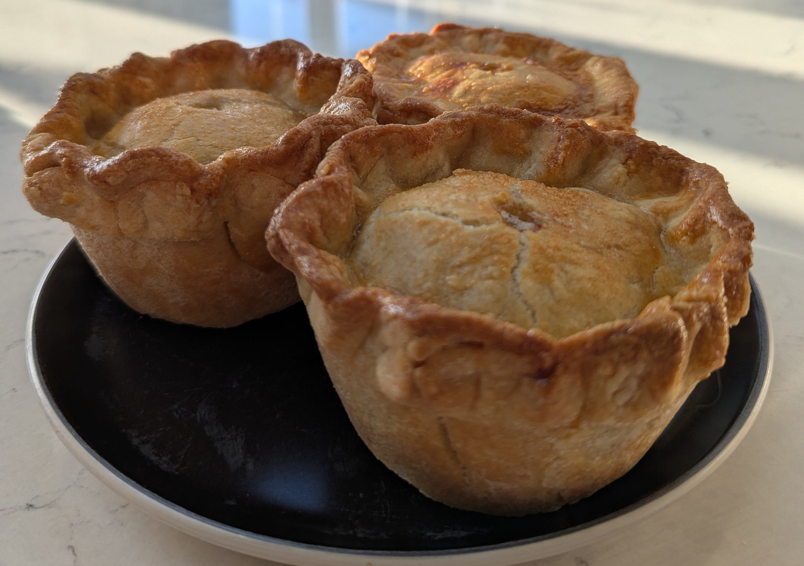

British Pork Pie
 Makes 6
Makes 6 Meat
Meat
Ploughmans lunch staple

For the hot water crust pastry
600gPlain flour1 tspsalt110gbutter130glard200gwater
In a medium saucepan over a medium heat melt the butter and lard in the water. The water should be hot but not boiling.
In a separate bowl weigh out the flour and salt and then pour in the water and fat mixture, mixing with a metal spoon until combined.
Once cool enough to handle, knead gently untill fully combined and a smooth dough is formed.
Separate the dough into one third and two thirds and wrap each chunk in clingfilm.
Place in the fridge to chill for 20 mins. Do not let it get too cold as it will be difficult to work.
For the pork filling
400gpork shoulder400gpork mince2 tspsage1 tspdried thyme1/2 tspground white pepper1 tspsalt1/2 tspground allspice1/4 tspground nutmeg25gBreadcrumbs
Cube the pork shoulder very small: 0.5 - 1cm.
Place all the filling ingedients in a bowl and mix well to combine. Chill in the fridge slightly.
To make the pies
1egg, beaten, for egg wash
Preheat your oven to 180°C
Take a 6 cup deep muffin tin and generously grease the cups with butter or lard.
Unwrap the larger piece of cooled pastry and roll out thin: approx 3mm. Cut rounds approx double the diameter of your muffin cups to fit up the sides and gently shape into the bottom, edges and sides of your tin, pressing lightly to flatten any folds.
Taking spoonfuls of your pork filling mixture pack the pork into the pastry cases up to the top.
Unwrap the smaller piece of cooled pastry and roll out thin: approx 3mm. Cut rounds approx the size of your muffin cups for lids. Cut a 1cm hole in the middle of each lid for a vent.
Brush the edges of the pastry cups with the egg wash and place the lids on top, pressing the edges firmly together.
Crimp the edges closed with a fork or fingers leaving a nice wavy pattern.
Bake in the middle of the oven for 30-35 mins until golden brown and the internal temp reads 71°C.
Leave to cool in the tin for a few mins then gently ease each pie out of the tin. You may need to loosen any connecting pastry or egg wash around the tops of your pies to get them out.
Leave to cool on a wire rack at room temp for 15 mins then place in the fridge to cool fully.
Serve with a classic Ploughmans lunch: a chunk of Cheddar or other British cheese, cold meats, fresh salad and apple, crusty bread and butter, pickled onions, a tangy chutney, and sometimes a hard-boiled egg.